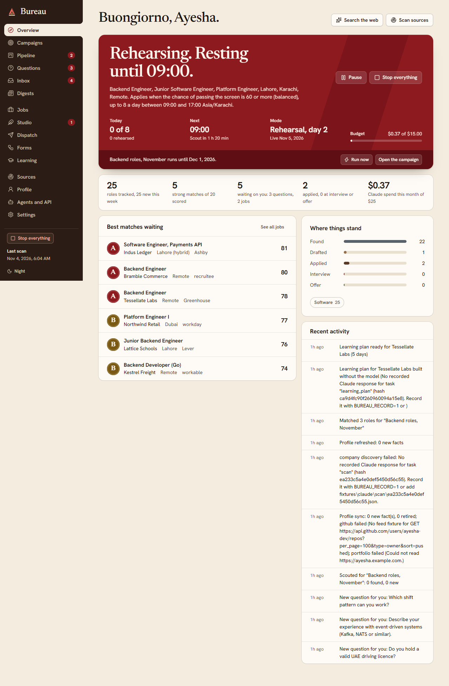
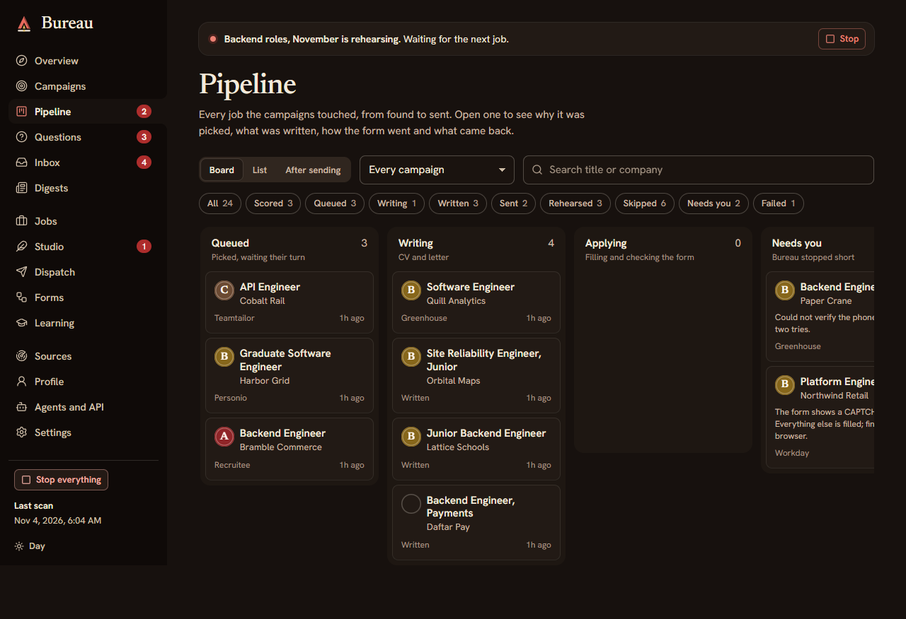
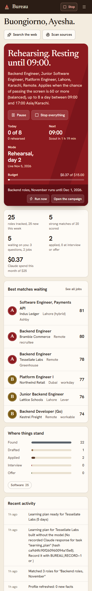

A local-first, Claude-powered job hunter. It scouts thousands of roles, scores them against your CV, writes each application in your voice, fact-checks every claim and applies through the employer's own form or inbox.


